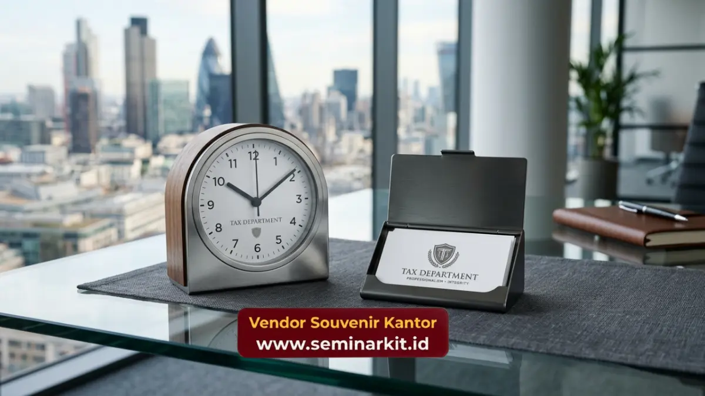

Produk cinderamata ini tidak hanya berfungsi sebagai kenang-kenangan, tetapi juga sebagai media komunikasi fisik yang merepresentasikan wibawa serta integritas lembaga negara di mata masyarakat dan wajib pajak. Pemilihan material, desain, hingga presisi cetak logo menjadi elemen krusial yang menentukan kualitas representasi institusi tersebut.
- Meningkatkan citra profesional dan kredibilitas instansi pajak di mata publik maupun mitra strategis.
- Memiliki standar desain elegan, fungsional, dan bernilai guna tinggi untuk aktivitas perkantoran.
- Mendukung kampanye sadar pajak melalui media promosi fisik yang awet dan mudah diingat.
- Pemesanan dalam skala besar membutuhkan jaminan presisi dari produsen terpercaya.
Mengapa Souvenir Kantor Pajak Sangat Penting?
Souvenir kantor pajak sangat penting karena berfungsi sebagai alat komunikasi non-verbal yang membangun kepercayaan, menegaskan otoritas, dan mempererat relasi dengan wajib pajak. Melalui benda fisik yang berkualitas, institusi dapat meninggalkan impresi yang bertahan lama.
Institusi pemerintah modern saat ini dituntut untuk tidak hanya menjadi administrator, tetapi juga komunikator yang baik. Cinderamata resmi memainkan peran krusial dalam menjembatani komunikasi antara lembaga negara dan masyarakat. Saat sebuah instansi pajak menyelenggarakan seminar, sosialisasi, atau apresiasi bagi wajib pajak patuh, pemberian merchandise menjadi bentuk penghargaan nyata.
Benda tersebut secara psikologis akan menciptakan hubungan timbal balik yang positif, menurunkan resistensi publik, dan membangun kedekatan emosional yang pada akhirnya bermuara pada peningkatan kepatuhan pajak. Selain itu, eksistensi cinderamata di ruang kerja penerima berfungsi sebagai pengingat konstan atau top of mind awareness. Ketika sebuah kalender meja eksklusif, buku catatan kulit, atau pena premium berlogo instansi perpajakan digunakan setiap hari oleh eksekutif perusahaan, logo dan pesan yang tersemat di sana akan terus dilihat.
Hal ini sangat efektif untuk menginternalisasi pesan-pesan sadar pajak tanpa harus terlihat agresif. Untuk mewujudkan hal ini, instansi harus memastikan bahwa setiap item diproduksi dengan standar tertinggi yang mencerminkan stabilitas dan kredibilitas. Anda dapat mempercayakan kebutuhan produksi berskala besar dengan hasil presisi melalui layanan khusus di vendorsouvenirkantor.web.id.
Apa Saja Standar Kualitas Cinderamata Institusi?
Standar kualitas cinderamata institusi wajib meliputi ketahanan material jangka panjang, tingkat fungsionalitas harian, serta presisi representasi visual logo lembaga tanpa terkesan berlebihan. Karakteristik ini memastikan merchandise layak mewakili lembaga pemerintah.
Material yang digunakan harus mencerminkan durabilitas tinggi. Untuk produk berbahan dasar kulit, penggunaan kulit sintetis premium atau kulit asli menjadi keharusan agar tidak mudah terkelupas atau pudar warnanya meski digunakan bertahun-tahun. Pada produk elektronik seperti power bank atau flash drive, keamanan komponen internal dan garansi fungsi menjadi syarat mutlak, mengingat instansi pemerintah tidak boleh mendistribusikan barang yang berpotensi membahayakan pengguna atau cepat rusak. Kerusakan pada merchandise justru dapat berbalik merusak citra lembaga.
Selain material, fungsionalitas memegang peranan utama. Barang yang hanya berakhir sebagai pajangan lemari tidak memiliki nilai komunikasi yang tinggi. Sebaliknya, barang-barang produktivitas seperti organizer meja, botol minum insulasi termal, atau tas dokumen, memiliki tingkat utilitas yang tinggi. Barang-barang ini akan dibawa ke berbagai tempat, memperluas jangkauan paparan logo institusi. Presisi cetakan logo juga sangat penting. Warna logo harus sama persis dengan brand guideline lembaga negara, tidak boleh ada deviasi warna. Teknik emboss, deboss, atau laser engraving lebih disarankan dibandingkan sablon biasa karena memberikan kesan eksklusif dan permanen.
Bagaimana Peran Merchandise dalam Edukasi Publik?
Merchandise berperan strategis dalam edukasi publik dengan menjadi medium pengingat fisik yang menyisipkan pesan ketaatan pajak dalam aktivitas sehari-hari masyarakat secara elegan dan tidak intrusif.
Edukasi pajak seringkali dianggap sebagai materi yang berat dan kaku oleh masyarakat umum. Untuk memecahkan kebekuan tersebut, pendekatan yang lebih soft sangat dibutuhkan. Menyisipkan pesan-pesan singkat seperti "Bangga Bayar Pajak" atau "Pajak Kuat Indonesia Maju" pada benda-benda esensial harian akan membuat pesan tersebut lebih mudah dicerna. Saat seseorang minum kopi dari tumbler berukir pesan tersebut, atau mencatat jadwal penting di agenda resmi, pesan edukasi tersebut secara halus masuk ke dalam alam bawah sadar mereka.
Penyebaran merchandise edukatif ini biasanya dilakukan pada momen-momen strategis seperti pekan panutan pajak, sosialisasi pengisian SPT, atau pameran layanan publik. Pemilihan jenis barang harus disesuaikan dengan demografi target audiens. Mahasiswa mungkin lebih cocok menerima lanyard atau tote bag berkualitas, sementara pengusaha besar lebih pantas menerima set pena kristal atau tas kerja kulit. Fleksibilitas dalam menyediakan berbagai varian produk untuk berbagai lapisan demografi ini sangat penting. Kami di vendorsouvenirkantor.web.id memahami betul kebutuhan diversifikasi ini dan siap menyuplai berbagai lini produk sesuai target sosialisasi instansi Anda.

Di Mana Bisa Memesan Produk Berkualitas Premium?
Produk berkualitas premium dapat dipesan secara langsung dengan menentukan spesifikasi awal, menyesuaikan rencana anggaran, lalu menghubungi mitra produksi terpercaya seperti vendorsouvenirkantor.web.id untuk pengerjaan profesional.
Bagi instansi pemerintah, proses pengadaan barang memerlukan mitra yang tidak hanya mampu memproduksi, tetapi juga memahami standar kepatuhan, tenggat waktu yang ketat, dan konsistensi kualitas dalam volume besar. Vendor yang profesional akan menyediakan mockup atau sampel fisik terlebih dahulu sebelum masuk ke tahap produksi massal. Hal ini untuk memastikan bahwa setiap detail, mulai dari dimensi, berat material, hingga akurasi warna logo, telah sesuai dengan ekspektasi panitia pengadaan.
Kami menyadari bahwa setiap sen anggaran negara harus dipertanggungjawabkan melalui produk akhir yang bernilai guna tinggi. Oleh karena itu, memilih spesialis yang berfokus murni pada ekosistem korporat dan pemerintahan adalah langkah paling aman. Proses pemesanan yang sistematis, transparansi pemilihan bahan, dan komunikasi yang responsif adalah jaminan layanan yang harus diprioritaskan oleh setiap panitia acara pajak.
Pengadaan merchandise untuk instansi perpajakan bukanlah sekadar rutinitas penyerapan anggaran, melainkan investasi strategis dalam membangun citra, menegaskan wibawa, dan memperkuat edukasi publik. Mengingat fungsinya yang sangat krusial, pemilihan item harus didasarkan pada standar material premium, fungsionalitas tinggi, dan akurasi representasi identitas lembaga. Jangan mengambil risiko dengan vendor yang tidak teruji. Pastikan Anda merencanakan pengadaan merchandise jauh-jauh hari dan mempercayakan produksinya kepada ahlinya melalui vendorsouvenirkantor.web.id, di mana kualitas premium dan ketepatan waktu menjadi prioritas utama.

Banner promosi: klik gambar untuk langsung terhubung ke WhatsApp tim sales.